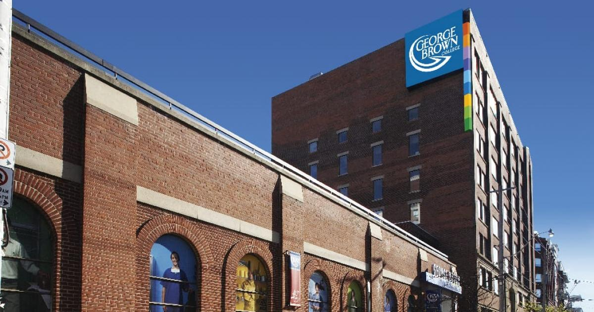

My College's focus on innovation, research, and academic excellence, and its leadership faculty
Ready to join the My College community? Apply today!
The academic experience at our college is designed to provide students with a comprehensive and challenging education. We offer a wide range of programs in various fields, including business, engineering, health sciences, liberal arts, and technology. Our faculty members are experts in their respective fields and are committed to providing students with a stimulating learning environment that encourages critical thinking, creativity, and innovation. We also offer various academic support services, such as tutoring and advising, to help students succeed in their coursework. Additionally, our college provides opportunities for students to engage in research and internships, allowing them to apply what they have learned in the classroom to real-world situations.
A well-rounded college experience is essential for students to thrive and achieve their goals. At our college, we believe that education extends beyond the classroom. That's why we provide a diverse range of clubs, organizations, and events to our students. We understand that students have unique interests, and we strive to accommodate everyone. Our campus is designed to provide a safe and inclusive environment where students can explore their passions and develop new skills. We encourage all students to take advantage of the opportunities available to them and make the most out of their college experience.
At our school, students have access to a variety of clubs and organizations that cater to a wide range of interests. From academic clubs like the Math and Science Club to cultural organizations like the Spanish Club, there is something for everyone. In addition to weekly meetings, these clubs often host events and activities such as guest speakers, field trips, and fundraisers. Our campus also has a thriving sports program, with opportunities to participate in both intramural and varsity sports. Students can also get involved in community service through organizations like the Volunteer Club. With so many options available, students are sure to find a club or activity that aligns with their interests and passions.
At our college, we believe that the admissions process should be straightforward and stress-free for students. We welcome applications from students of all backgrounds and experiences, and we are committed to creating a diverse and inclusive campus community. Our admissions team is here to support you every step of the way, from answering your questions to helping you with your application. We believe that every student deserves the opportunity to pursue their educational goals, and we are committed to making that a reality for all who choose to join our community. We look forward to welcoming you to our campus!